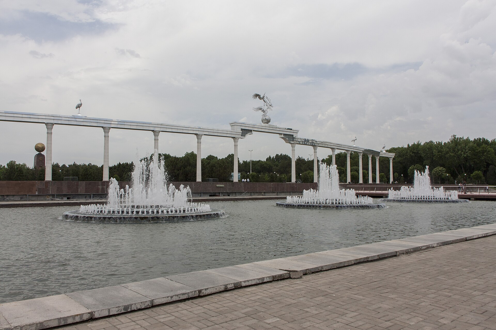

Uzbekistan's Independence: The Road to 31 August 1991
From the Declaration of Sovereignty (1990) to the declaration of independence on 31 August 1991 and the December referendum — a factual history with dates, figures and the first steps of nation-building.

Uzbekistan marks Independence Day every year on 1 September. Behind it lies a political process of several years: the final years of the Soviet Union, the movement for sovereignty, and the events of August 1991. The following sets out the road to independence using only verified dates and figures.
The final years of the Soviet era
In June 1989 inter-ethnic clashes broke out in the Fergana Valley, killing more than 100 people. In the same period, on 23 June 1989, Islam Karimov was appointed First Secretary of the Communist Party of Uzbekistan. On 24 March 1990 the Supreme Council of Uzbekistan elected him president of the republic (this was not a popular vote).
On 20 June 1990 the Supreme Council of Uzbekistan adopted the Declaration of Sovereignty, proclaiming the primacy of republican law. Uzbekistan was the first Central Asian republic to take this step.
August 1991 and the declaration of independence
On 19–21 August 1991 there was an attempted coup against Gorbachev in Moscow (the GKChP). Its failure accelerated declarations of independence across the Soviet republics.
On 31 August 1991, an extraordinary session of Uzbekistan's Supreme Council in Tashkent declared state independence, passed the constitutional law “On the Foundations of State Independence,” and renamed the Uzbek SSR the Republic of Uzbekistan. By the same act, 1 September was designated Independence Day.
The 29 December referendum and election
On 29 December 1991 a nationwide referendum on independence was held: 98.26 percent of participants (9,718,155 votes) approved independence, with turnout of about 94 percent. The first direct presidential election was held on the same day.
- Declaration of independence: 31 August 1991
- Independence Day: 1 September
- Referendum (29 December): 98.26% “yes,” turnout ~94%
- Presidential election: Islam Karimov won with ~86–87%
- Opponent: Muhammad Salih (Erk) ~12%
In the presidential election Islam Karimov (People's Democratic Party) won — sources put his result in the 86–87 percent range. His sole opponent, Muhammad Salih (Erk Democratic Party), received about 12 percent of the vote.
The first steps after independence
In December 1991 the USSR dissolved (Gorbachev resigned on 25 December, the union formally ceased on 26 December); Uzbekistan joined the Commonwealth of Independent States (CIS). On 2 March 1992 Uzbekistan was admitted to the United Nations. On 8 December 1992 a new Constitution was adopted, and in 1994 the national currency — the som — was introduced.
A note on sources
Some figures (such as the presidential-election percentage) vary slightly by source: official Western reports give “86 percent,” while detailed tallies give 87.14 percent. On the independence referendum, “over 98 percent” is consistent across sources. The dates have been verified against several reputable sources.